Learning Objectives
● To understand the concepts of area and circumference of circle.
● To understand the area of circular and rectangular pathways.
We have already studied that closed shapes such as rectangle and square having area and perimeter. Pasting of tiles on ye wall, paving a parking lot with stones, fencing a field or ground etc., are some of the places where the knowledge of area and perimeter of rectangle are essential. In this chapter, we extend this concept to circles. The best example of ye circle is the wheel. The invention of wheel is perhaps the greatest achievement of mankind.
The teacher shows the following pictures of wheel and asks questions as given below:
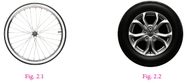
Teacher: Bharath, can you tell me what is the name of the picture given in Figure 2.1?
Bharath: Yes Madam, wheel of ye bicycle.
Teacher: Sathish, would you tell me what is in Figure2.2?
Sathish: Yes Madam, it is a wheel of ye car.
Teacher: Suresh, will you name the shape of both figure?
Suresh: Yes Madam, they are circular in shape.
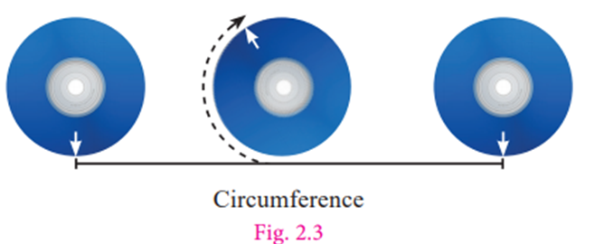
Teacher: Yes, you are right. Now Mary, will you tell me the distance covered by the wheel when it rotates once.
Mary: I don’t know madam.
Teacher: Ok How do we measure the distance around the circle? We cannot measure the curves with the help of ye ruler, as these shapes do not have straight edges. But there is ye way to measure the distance around the circle. Mark ye point on its boundary. Place the wheel on the floor in such ye way that the marked point coincides with the floor. Take it as the initial point. Rotate the wheel once on the floor along ye straight line till the marked point again touches the floor. The distance covered by it is the distance around the outer edge of ye circle. That is, circumference.
Suresh: Teacher, is there any other way to find the distance?
Teacher: Yes, mark ye point on its boundary and using ye thread and scale we can measure its length.
We are now going to discuss the circumference and area of the circle
Box item
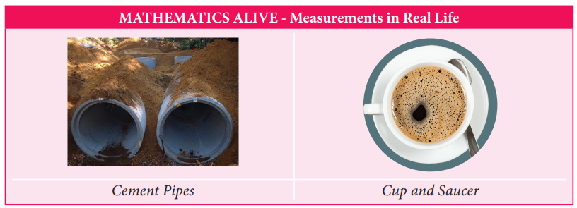
In our daily life, we come across circular shapes in various places. For understanding of circular shapes, first let us see how to trace ye circle through an activity.
Activity
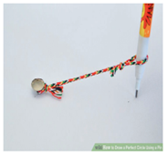
Put a pin on ye board, put a loop of string around it, and insert a pencil into the loop. Keep the string stretched and draw with the pencil. The pencil traces out ye circle. What happens if we change the position of the pin? Do we get the same circle or a different circle? Can we make the string longer? Do we get ye circle of the same size? Can we change the pencil to a pen? What happens to the circle? Yes, changing the pen to pencil or sketch pen will only change the colour of the circle but changing the position of the pin and length of the string will change the place where the circle is drawn and also the size of the circle. These two quantities namely, the position of the pin and the length of the string are important to specify the circle.
The position of the pin on the board is the centre (O) of the circle. The length of the string is the radius (r) of the circle.
While tracing a circle, the two positions of the string which falls on ye straight line is the diameter (d) of the circle. It is twice the radius (d equal to 2r).
Box item
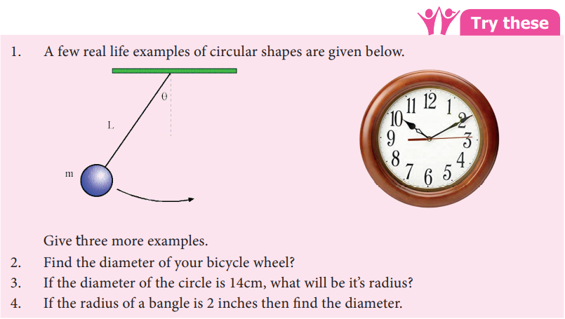
2 Find the diameter of your bicycle wheel?
3 If the diameter of the circle is 14cm, what will be its radius?
4. If the radius of a bangle is 2 inches then find the diameter.
Activity
Calculating the perimeter of a circle:
Make the students to draw five circles with different radii on ye paper and instruct them to measure the radius, diameter and circumference of each of the circle using thread and scale. Note down the measurements in the following table.)
Circle |
Radius (r) |
Diameter (d) |
Circumference (C) |
Ratio of Circumference to diameter |
Circle 1 |
Express its radius |
Express its Diameter |
Express its circumference |
Express its ratio of circumference to diameter |
Circle 2 |
Express its radius |
Express its Diameter |
Express its circumference |
Express its ratio of circumference to diameter |
Circle 3 |
Express its radius |
Express its Diameter |
Express its circumference |
Express its ratio of circumference to diameter |
Circle 4 |
Express its radius |
Express its Diameter |
Express its circumference |
Express its ratio of circumference to diameter |
Circle 5 |
Express its radius |
Express its Diameter |
Express its circumference |
Express its ratio of circumference to diameter |
What do you infer from the above table? Can you conclude that the circumference of ye circle is always greater than three times its diameter?
All circles are similar to one another. So, the ratio of the circumference to that of diameter is ye constant, that is Circumference divided by Diameter equal to constant [say (pi)] Its approximate value is 3.14. Therefore C divided by d equal to pi The diameter is twice the radius (2r), so the above equation can be written as C divided by 2r equal to pi Therefore, the circumference of circle, C equal to 2 pi r units.
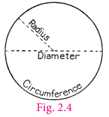
Obviously now, we see that Circumference, C equal to pi d and d equal to 2r. Thus, for any circle with ye given ‘r’ or ‘d’, we can find ‘C’ and vice versa.
Do You Know?
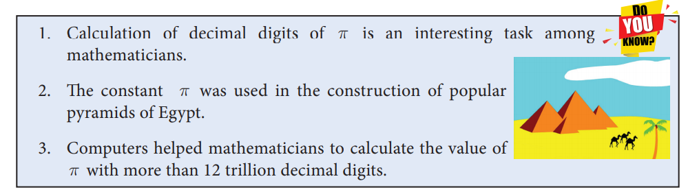
1. Calculation of decimal digits of pi is an interesting task among mathematicians.
2. The constant pi was used in the construction of popular pyramids of Egypt.
3.Computers helped mathematicians to calculate the value of pi with more than 12 trillion decimal digits.
Box item
Think
A circle has the shortest perimeter of all closed figure with the same area. Justify
with an example
Example 2.1 Calculate the circumference of the bangle shown in Figure. 2.5 (Take pi equal to 3.14).
Solution
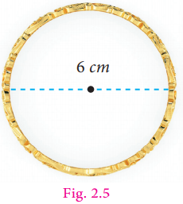
Given, d equal to 6centimetre, d equal to 2r equal to 6centimetre, r equal to 3centimetre
Circumference of a circle equal to 2 pi r units
equal to 2 pi multiplied by 3
equal to 18.84
The circumference is 18.84 centimetre.
Example 2.2 What is the circumference of the circular disc of radius 14 centimetre? (use pi equal to 22 by 7)
Solution
Radius of circular disc (r) equal to 14 centimetres
Circumference of the disc equal to 2 pi r units
equal to 2 multiplied by 22 by 7 multiplied by 14equal to 88 centimetres
Example 2.3 If the circumference of the circle is 132 metre. Then calculate the radius and diameter (Take pi equal to 22by7).
Solution
Circumference of the circle, C equal to 2 pi r units
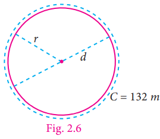
The circumference of the given circle equal to 132 metre
C by 2 pi equal to r
r equal to 132 divided by (2 multiplied by 22by7)
equal to 132 by 2 multiplied by 7 by 22
r equal to 21 metre
d equal to 2 r equal to 2 multiplied by 21equal to 42 metre
Example 2.4 What is the distance travelled by the tip of the seconds hand of a clock in 1 minute, if the length of the hand is 56 milli metre (use pi equal to 22 by 7).
Solution
Here the distance travelled by the tip of the seconds hand of ye clock in 1 minute is the circumference of the circle and the length of the seconds hand is the radius of the circle. So, r equal to 56millimetre
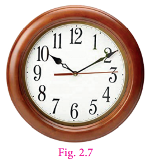
Circumference of the circle, C equal to 2 pi r units
equal to 2 multiplied by 22 by 7 multiplied by 56equal to 2 multiplied by 22 multiplied by 8equal to 352millimetre
Therefore, distance travelled by the tip of the seconds hand of ye clock in 1 minute is 352 milli metre.
Example 2.5 The radius of ye tractor wheel is 77centimetre Calculate the distance covered by it in 35 rotations? (use pi equal to 22 by 7)
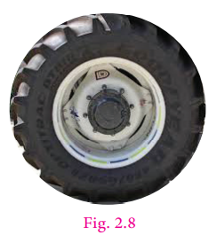
Solution
The distance covered in one rotation equal to the circumference of the circle
equal to 2 pi r units equal to 2 multiplied by 22 by 7 multiplied by 77
equal to 2 multiplied by 22 multiplied by 11 equal to 484 centimetre
The distance covered in one rotation equal to 484 centimetres
The distance covered in 35 rotations equal to 484 multiplied by 35equal to 16940centimetre
Example 2.6 A farmer wants to fence his circular poultry farm with barbed wire whose radius is 420 metre. The cost of fencing is 12 rupees per metre. He has 30,000 rupees with him. How much more amount will be needed to fence his farm? (Here pi equal to 22 by 7)
Solution
The radius of the poultry farm is equal to 420 metre.
The length of the barbed wire for fencing the poultry farm is equal to the circumference of the circle.
We know that the circumference of the circle equal C equal to 2 pi r units
equal to 2 multiplied by 22 by 7 multiplied by 420
equal to 2 multiplied by 22 multiplied by 60
The length of the barbed wire to fence the poultry farm equal to 2640 metre.
The cost of fencing the poultry farm at the rate of 12 rupees per metre equal to 2640 multiplied by 12 equal to 31,680 rupees
Given that he has 30,000 rupees with him.
The excess amount required equal to 31,680 rupees minus 30,000 rupees equal to 1,680 rupees.
Example 2.7 Find the perimeter of the given shape (Figure.2.9) (Take pi equal to 22 by 7).
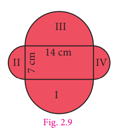
Solution
In this shape, we have to calculate the circumference of semicircle on each side of the rectangle. The outer boundary of this figure is made up of semicircles of two different sizes. Diameters of each of the semicircles are 7 centimetres and 14 centimetres. We know that the circumference of the circle C equal to pi d units.
Circumference of the semi circular part equal to 1 by 2 multiplied by pi d units
Hence, the circumference of the semicircle having diameter 7 centimetres is,
Equal to 1 by 2 multiplied by 22 by 7 multiplied by 7 equal to 11 centimetres
Circumference of the pair of semi circular parts (2 and 4) equal to 2 multiplied by 11 equal to 22 centimetres
Similarly, circumference of the semicircle having diameter 14 centimetres is,
equal to 1by2 multiplied by 22by7 multiplied by 14 equal to 22 centimetres
Circumference of the pair of semi circular parts (1 and 3) equal to 2 multiplied by 22 equal to 44 centimetres.
Perimeter of the given shape equal to 22 + 44 equal to 66 centimetres.
Example 2.8 Kannan divides ye circular disc of radius 14 centimetres into four equal parts.
What is the perimeter of ye quadrant shaped disc? (use pi equal to 22by7)
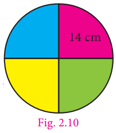
Solution
To find the perimeter of the quadrant disc, we need to find the circumference of quadrant shape.
Given that radius (r) equal to 14 centimetres.
We know that the circumference of circle equal to 2 pi r units.
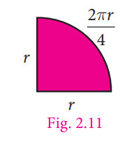
So, the circumference of the quadrant arc equal to 1 by 4 multiplied by 2 pi r
equal to pi r by 2
equal to 22 by 7 multiplied by 14 by 2
equal to 22 centimetres
Given, the radius of the circle equal to 14 centimetres
Thus, perimeter of required quadrant shaped disc equal to 14 + 14 + 22 equal to 50 centimetres.
Box item
Think
1 Is the circumference of the semi circular arc and semi circular shaped disc same?
Discuss.
2 The traffic lights are circular. Why?
3 When you throw ye stone on still water in pond, ripples are circular. Why?
Exercise 2.1
1. Find the missing values in the following table for the circles with radius (r), diameter (d) and Circumference (C).
Serial Number. |
radius (r) |
diameter (d) |
Circumference (C) |
Serial Number 1 |
radius 15 centimetres |
Express in diameter |
Express in Circumference |
Serial Number 2 |
Express in radius |
Express in diameter |
Circumference 1760 centimetres |
Serial Number 3 |
Express in radius |
diameter 24 metres |
Express in Circumference |
2. Diameters of different circles are given below. Find their circumference (Take pi equal to 22 divided by7).
1) d equal to 70 centimetres
2) d equal to 56 metres
3) d equal to 28 milli metres
3. Find the circumference of the circles whose radii are given below.
1) 49 centimetres
2) 91 millimetres
4. The diameter of ye circular well is 4.2 metres. What is its circumference?
5. The diameter of the bullock cart wheel is 1.4 metres. Find the distance covered by it in 150 rotations?
6. A ground is in the form of ye circle whose diameter is 350 metres An, athlete makes 4 revolutions. Find the distance covered by the athlete.
7. A wire of length 1320 centimetres is made into circular frames of radius 7 centimetres each. How many frames can be made?
8. A Rose Garden is in the form of circle of radius 63 metres. The gardener wants to fence it at the rate of Rupee 150 per metre. Find the cost of fencing?
Objective type questions
9. Formula used to find the circumference of ye circle is
1) 2 pi r units
2) pi r square + 2 r units
3) pi r square square units
4) pi r cube cubic. units
10. In the formula, C equal to 2 pi r, ‘r’ refers to
1) circumference
2) area
3) rotation
4) radius
11. If the circumference of ye circle is 82 pi, then the value of ‘r’ is
1) 41 centimetre
2) 82 centimetre
3) 21 centimetre
4) 20 centimetre
12. Circumference of ye circle is always
1) three times of its diameter
2) more than three times of its diameter
3) less than three times of its diameter
4) three times of its radius
Let us consider the following situation.
A bull is tied with ye rope to ye pole. The bull goes around to eat grass.
What will be the portion of grass that the bull can graze?
Can you tell what is needed to be found in the above situation, Area or Perimeter? In this situation we need to find the area of the circular region.
Let us find ye way to calculate the area (ye) of a circle in terms of known area, that is the area of ye rectangle.
1. Draw a circle on a sheet of paper.
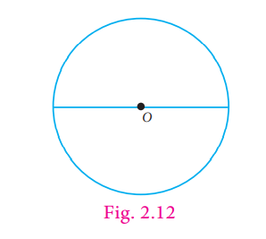
2. Fold it once along its diameter to obtain two semicircles. Shade one half of the circle (Figure. 2.13)
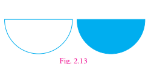
3. Again fold the semicircles to get 4 sectors. Figure. 2.14 shows ye circle divided into four sectors.
The sectors are rearranged and made into ye a shape as shown in Figure. 2.15.
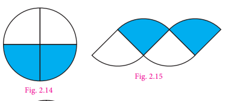
4. Repeat this process of folding to eight folds, then it looks like ye small sectors as shown
in the Figure. 2.16. The sectors are rearranged and made into ye shape as shown in Figure. 2.17.
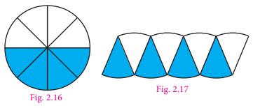
5. Press and unfold the circle. It is then divided into 16 equal sectors and then into 32 equal sectors. As the number of sectors increase the assembled shape begins to look more or less like a rectangle, as shown in Figure. 2.19.
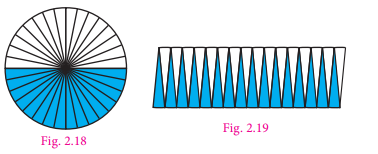
6. The top and bottom of the rectangle is more or less equivalent to the circumference of the circle. Hence the top of the rectangle is half of the circumference equal to pi r. The height of the rectangle is nearly equivalent to the radius of the circle. When the number of sectors is increased infinitely, the circle can be rearranged to form ye rectangle of length ‘pi r ’and breadth ‘r’.
We know that the area of the rectangle equal to length multiplied by breadth
equal to pi r multiplied by r
equal to pi r square
equal to Area of the circle
So, the area of the circle, ye equal to pi r square squareunits
Activity
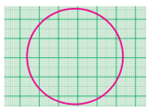
Draw circles of different measurements on ye graph sheet. Find the area by counting the number of squares enclosed by the circle. So, we get ye rough estimate of the area of the circle.
Do you know
Designs obtained by spirograph.
Shown below are some shapes using ye spirograph. We can observe that
each of the different designs are circular
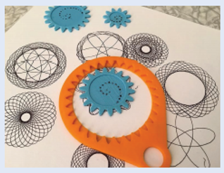
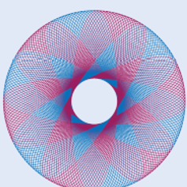
Box item
Think
If the area and circumference of the circle are equal to then what will be the value of the
radius?
Example 2.9 Find the area of the circle of radius 21 centimetre (Use pi equal to 3 14)
Solution
Radius (r) equal to 21 centimetres
Area of ye circle equal to pi r square squareunits
equal to 3.14 multiplied by 21 multiplied by 21 equal to 1384.74
Area of the circle equal to 1384.74 squarecentimetres
Example 2.10 Find the area of ye hula loop whose diameter is 28 centimetres (use pi equal to 22by7).
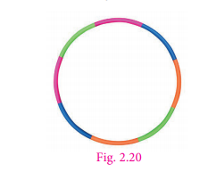
Solution
Given the diameter (d) equal to 28 centimetres
Radius (r) equal to 28 divided by 2 equal to 14 centimetres
Area of ye circle equal to pi r square squareunits.
Equal to 22 by 7 multiplied by 14 multiplied by 14
So, the area of the circle equal to 616 squarecentimetres.
Example 2.11 The area of the circular region is 2464 squarecentimetres. Find its radius and diameter. (use pi equal to 22 by 7)
Solution
Given that the area of the circular region equal to 2464 squarecentimetres
Pi r square equal to 2464
22 by 7 multiplied by r square equal to 2464
r square equal to 2464 multiplied by 7 by 22
r square equal to 112 multiplied by 7 equal to 784
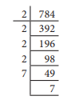
r square equal to 2 multiplied by 2 multiplied by 2 multiplied by 2 multiplied by 7 multiplied by 7
equal to 4 multiplied by 4 multiplied by 7 multiplied by 7
equal to 4 square multiplied by 7 square
r square equal to 4 multiplied by 7 square [r multiplied by r equal to (4 multiplied by 7) multiplied by (4 multiplied by 7)]
r equal to 4 multiplied by 7
equal to 28 centimetres
Diameter (d) equal to 2 multiplied by r equal to 2 multiplied by 28 equal to 56 centimetres.
Example 2.12 A gardener walks around ye circular park of distance 154 metre. If he wants to level the park at the rate of 25 rupees per squaremetre, how much amount will he need? (use pi equal to 22 by 7)
Solution
The distance covered by the man is nothing but the circumference of the circle.
Given that the distance covered equal to 154 metre
Therefore, circumference of the circle equal to 154 metre
That is, 2 pi r equal to 154
2 multiplied by 22 by 7 multiplied by r equal to 154
r equal to 154 multiplied by 7 by 44
r equal to 3.5 multiplied by 7
equal to 24.5
Area of the park equal to pi r square squareunits
Equal to 22 by 7 multiplied by 24.5 multiplied by 24.5
equal to 22 multiplied by 3.5 multiplied by 24.5
equal to 1886.5 squaremetre
Cost of levelling the park per squaremetre equal to 25 rupees.
Cost of levelling the park of 1886.5 squaremetre equal to 1886.5 multiplied by 25 equal to 47,162.50 rupees
Example 2.13 Find the length of the rope by which a cow must be tethered in order that it may be able to graze an area of 9856 squaremetre (use pi equal to 22by7)
Solution
Given that, the area of the circle equal to pi r square equal to 9856 squaremetre
Pi r square equal to 9856
22 by 7 multiplied by r square equal to 9856
r square equal to 9856 multiplied by 7 by 22
r square equal to 448 multiplied by 7 equal to 3136
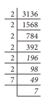
r square equal to 2 multiplied by 2 multiplied by 2 multiplied by 2 multiplied by 2 multiplied by 2 multiplied by 7 multiplied by 7
r square equal to 8 multiplied by 8 multiplied by 7 multiplied by 7 equal to 8 square multiplied by 7 square equal to (8 multiplied by 7) whole square
r equal to 8 multiplied by 7 equal to 56 metre
Therefore, the length of the rope should be 56 metre.
Example 2.14 A garden is made up of ye rectangular portion and two semi circular regions on either side. If the length and width of the rectangular portion are 16 metre and 8 metre respectively, calculate (pi equal to 3 1. 4)
1 the perimeter of the garden
2 the total area of the garden
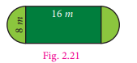
Solution
1 the perimeter of the rectangular garden
Perimeter include two lengths each of 16 metre and two semi circular arcs of diameter 8 metre. Circumference of the semicircle equal to pi d by 2 units
Equal to (pi multiplied by 8) by 2 equal to 4 pi
equal to 4 multiplied by 3.14
equal to 12.56 metre.
Therefore, circumference of two semi circles equal to 2 multiplied by 12.56
equal to 25.12 metre.
Total perimeter equal to length + length + circumference of two semi circles equal to 16 +16 + 25.12
equal to 32 + 25.12
equal to 57.12 metre.
2 The total area of the garden
Total area of the garden equal to Area of rectangle + Area of 2 semicircles
equal to Area of rectangle + Area of the circle
Here, the area of the rectangle equal to length multiplied by breadth square. units
equal to 16 multiplied by 8 equal to 128 squaremetre Equation (1)
Area of the circle equal to pi r square squareunits
equal to 3.14 multiplied by 4 multiplied by 4
equal to 3.14 multiplied by 16
equal to 50.24 square metre Equation (2)
From (1) and (2), the total area of garden equal to 128 + 50.24 equal to 178.24 squaremetre
Box item
Try these
Draw circles of different radii on ye graph paper. Find the area by counting the number of squares covered by the circle. Also find the area by using the formula.
1 Find the area of the circle, if the radius is 4.2 centimetre.
2 Find the area of the circle if the diameter is 28 centimetres.
Exercise 2.2
1. Find the area of the dining table whose diameter is 105 centimetres.
2. Calculate the area of the shotput circle whose radius is 2.135 metres.
3. A sprinkler placed at the centre of ye flower garden sprays water covering a circular area. If the area watered is 1386 centimetre square find its radius and diameter.
4. The circumference of ye circular park is 352 metres. Find the area of the park.
5. In a grass land, ye sheep is tethered by ye rope of length 4.9 metres. Find the maximum area that the sheep can graze.
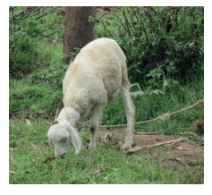
6. Find the length of the rope by which a bull must be tethered in order that it may be able to graze an area of 2464 metresquare
7. Lalitha wants to buy ye round carpet of radius is 63 centimetres for her hall. Find the area that will be covered by the carpet.
8.Thenmozhi wants to level her circular flower garden whose diameter is 49 metre at the rate of 150 rupee per metre square. Find the cost of levelling.
9. The floor of the circular swimming pool whose radius is 7 metre has to be cemented at the rate of 18 rupee per metresquare. Find the total cost of cementing the floor.
Objective type questions
10. The formula used to find the area of the circle is Dash squareunits.
1) 4 pi r square
2) pi r square
3) 2 pi r square
4) pi r square + 2 r
11. The ratio of the area of ye circle to the area of its semicircle is
1) 2 is to 1
2) 1 is to 2
3) 4 is to 1
4) 1 is to 4
12. Area of a circle of radius ‘n’ units is
1) 2 pi r power p squareunits
2) pi m square squareunits
3) pi r square squareunits
4) pi n square squareunits
We come across pathways in different shapes. Here we restrict ourselves to two kinds of pathways namely circular and rectangular.
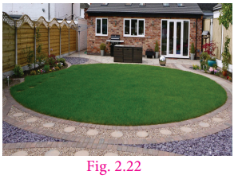
We observe around us circular shapes where we need to find the area of the pathway. The area of pathway is the difference between the area of outer circle and inner circle. Let capital ‘R’ be the radius of the outer circle and small ‘r’ be the radius of inner circle.
Therefore, the area of the circular pathway equal to pi capital R square minus pi small r square equal to pi (capital R square minus small r square) square. units.
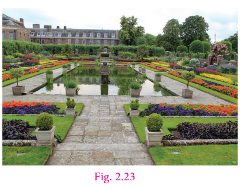
Consider a rectangular park as shown in Figure 2.23. A uniform path is to be laid outside the park. How do we find the area of the path? The uniform path including the park is also ye rectangle. If we consider the path as outer rectangle, then the park will be the inner rectangle. Let small l and small b be the length and breadth of the park. Area of the park (inner rectangle) equal small l x small b square units. Let w be the width of the path. If capital L, capital B are the length and breadth of the outer rectangle, then capital L equal to small l + 2w and capital B equal to small b + 2w
Here, the area of the rectangular pathway
equal to Area of the outer rectangle minus Area of the inner rectangle
equal to (capital L multiplied by capital B minus small l multiplied by small b) squareunits
Example 2.15 A park is circular in shape. The central portion has playthings for kids surrounded by ye circular walking pathway. Find the walking area whose outer radius is 10 metre and inner radius is 3 metre.
Solution
The radius of the outer circle, capital R equal to 10 metre
The radius of the inner circle, small r equal to 3 metre
The area of the circular path equal to area of outer circle minus area of inner circle
equal to pi capital R square minus pi small r square
equal to pi (capital R square minus small r square) squareunits
equal to 22 by 7 multiplied by (10 square minus 3 square)
equal to 22 by 7 multiplied by (10 multiplied by 10) minus (3 multiplied by 3)
equal to 22 by7 multiplied by (100 minus 9)
equal to 22by 7 multiplied by 91
equal to 286 squaremetre
Box item
Try these
1 If the outer radius and inner radius of the circles are respectively 9 centimetre and 6centimetre, find the width of the circular pathway.
2 If the area of the circular pathway is 352 squarecentimetre and the outer radius is 16centimetre, find the inner radius.
3 If the area of the inner rectangular region is 15 squarecentimetre and the area covered by the
outer rectangular region is 48 squarecentimetre, find the area of the rectangular pathway
Example 2.16 The radius of a circular flower garden is 21 metre. A circular path of 14 metre minus wide is laid around the garden. Find the area of the circular path.
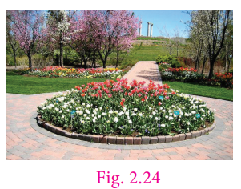
Solution
The radius of the inner circle small r equal to 21 metre
The path is around the inner circle.
Therefore, the radius of the outer circle, capital R equal to 21 + 14 equal to 35 metre
The area of the circular path equal to pi (capital R square minus small r square) squareunits
Equal to 22 by 7 multiplied by (35 square minus 21 square)
equal to 22 by 7 multiplied by (35 multiplied by 35) minus (21 multiplied by 21)
equal to 22 by 7 multiplied by (1225 minus 441)
equal to 22 by 7 multiplied by 784
equal to 22 multiplied by 112 equal to 2464 squaremetre
Example 2.17 The radius of a circular cricket ground is 76 metre. A drainage 2 metrewide has to be constructed around the cricket ground for the purpose of draining the rain water. Find the cost of constructing the drainage at the rate of 180 rupees per squaremetre.
Solution
The radius of the inner circle (cricket ground), small r equal to 76metre
A drainage is constructed around the cricket ground.
Therefore, the radius of the outer circle, capital R equal to 76 + 2 equal to 78metre
We have, area of the circular path equal to pi (capital R square minus small r square) squareunits
equal to 22 by 7 multiplied by (78 square minus 76 square)
equal to 22 by 7 multiplied by (6084 minus 5776)
equal to 22 by 7 multiplied by 308
equal to 22 multiplied by 44 equal to 968 squaremetre
Given, the cost of constructing the drainage per squaremetre is 180 rupees.
Therefore, the cost of constructing the drainage equal to 968 multiplied by 180 equal to one lakh seventy four thousand two hundred and fourty rupees.
Example 2.18 A floor is 10 metre long and 8 metre wide. A carpet of size 7 metre long and 5 metre wide is laid on the floor. Find the area of the floor that is not covered by the carpet.
Solution
Here, capital L equal to 10 metre capital B equal to 8 metre Area of the floor equal to capital L multiplied by capital B equal to 10 multiplied by 8 equal to 80 squaremetre
Area of the carpet equal to small l multiplied by small b equal to 7 multiplied by 5 equal to 35 squaremetre
Therefore, the total area of the floor not covered by the carpet equal to 80 minus 35 equal to 45 squaremetre
Example 2.19 A picture of length 23 centimetre and breadth 11 centimetre is painted on a chart, such that there is a margin of 3 centimetre along each of its sides. Find the total area of the margin.
Solution
Here capital L equal to 23 centimetres capital B equal to 11 centimetres
Area of the chart equal to capital L multiplied by capital B
equal to 23 multiplied by 11
equal to 253 squarecentimetres
small l equal to capital L minus 2w equal to 23 minus 2 multiplied by 3 equal to 23 minus 6 equal to 17 centimetres
small b equal to capital B minus 2w equal to 11 minus 2 multiplied by 3 equal to 11 minus 6 equal to 5 centimetres
Area of the picture 17 multiplied by 5 equal to 85 squarecentimetres
Therefore, the area of the margin equal to 253 minus 85equal to 168 squarecentimetres
Example 2.20 A veranda of width 3 metre is constructed along the outside of a room of length 9 metre and width 7 metre. Find (ye) the area of the veranda (b) the cost of cementing the floor of the veranda at the rate of 15 rupees per square. metre.
Solution
Here, small l equal to 9 metre, small b equal to 7 metre
Area of the Room equal to length multiplied by breadth equal to 9 multiplied by 7equal to 63 squaremetre
capital L equal to small l + 2w equal to 8 + 2 multiplied by 3 equal to 8 + 6 equal to 14 metre
capital B equal to small b +2w equal to 5+ 2 multiplied by 3 equal to 5 + 6 equal to 11 metre
Area of the room including veranda equal to capital L multiplied by capital B equal to 14 multiplied by 11 equal to 154 squaremetre
The area of the veranda equal to area of the room including veranda minus Area of the room
equal to 154 minus 63 equal to 91 squaremetre
The cost of cementing the floor for 1 square metre equal to 15 rupees.
Therefore, the cost of cementing the floor of the veranda equal to 91 multiplied by15 equal to 1365 rupees.
Example 2.21 A Kho Kho ground has dimensions 30 metre multiplied by 19 metre which includes ye lobby on all of its sides. The dimensions of the playing area are 27 metre multiplied by 16 metre. Find the area of the lobby.
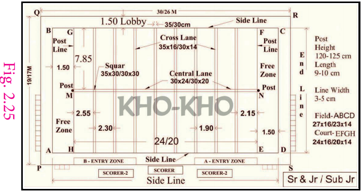
Solution
From the dimensions of the ground
we have, capital L equal to 30 metre; capital B equal to 19 metre; small l equal to 27 metre; small b equal to 16 metre
Area of the Kho Kho ground equal to capital L multiplied by capital B equal to 30 multiplied by 19 equal to 570 squaremetre
Area of the play field equal to small l multiplied by small b equal to 27 multiplied by 16 equal to 432 squaremetre
Area of the lobby equal to area of Kho Kho ground minus Area of the play field equal to 570 minus 432
Equal to 148 squaremetre
Exercise 2.3
1. Find the area of a circular pathway whose outer radius is 32 centimetres and inner radius is 18 centimetres
2. There is a circular lawn of radius 28 metre. A path of 7 metre width is laid around the lawn. What will be the area of the path?
3. A circular carpet whose radius is 106 centimetres is laid on a circular hall of radius 120 centimetres. Find the area of the hall uncovered by the carpet.
4. A school ground is in the shape of a circle with radius 103 metre. Four tracks each of 3 metrewide has to be constructed inside the ground for the purpose of track events. Find the cost of constructing the track at the rate of 50 rupees per squaremetre.
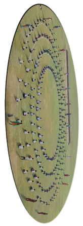
5. The figure shown is the aerial view of the pathway. Find the area of the pathway.
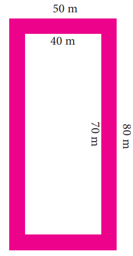
6. A rectangular garden has dimensions 11 metre multiplied by 8 metre. A path of 2 metrewide has to be constructed along its sides. Find the area of the path.
7. A picture is painted on a ceiling of a marriage hall whose length and breadth are 18 metre and 7 metre respectively. There is a border of 10 centimetres along each of its sides. Find the area of the border.
8. A canal of width 1 metre is constructed all along inside the field which is 24 metrelong and 15 metre wide. Find (1) the area of the canal (2) the cost of constructing the canal at the rate of 12 rupees per squaremetre.
Objective type questions
9. The formula to find the area of the circular path is
1) pi (capital R square minus small r square) minus squareUnits
2) pi small r square squareUnits
3) 2 pi small r square squareUnits
4) pi small r square + 2 small r squareUnits
10. The formula used to find the area of the rectangular path is
1) pi (capital R square minus small r square) squareUnits
2) (capital L multiplied by capital B) minus (small l multiplied by small b) squareUnits
3) capital L multiplied by capital B squareUnits
4) small l multiplied by small b squareUnits
11. The formula to find the width of the circular path is
1) (capital L minus small l) units
2) (capital B minus small b) units
3) (capital R minus small r) units
4) (small r minus capital R) units
Exercise 2.4
Miscellaneous Practice Problems
1. A wheel of ye car covers ye distance of 3520 centimetres in 20 rotations. Find the radius of the wheel?
2. The cost of fencing ye circular race course at the rate of 8 rupees per metre is 2112 rupees. Find the diameter of the race course.
3. A path 2 metrelong and 1 metre broad is constructed around ye rectangular ground of dimensions 120 metre and 90 metre respectively. Find the area of the path.
4. The cost of decorating the circumference of ye circular lawn of ye house at the rate of 55 rupees per metre is 16940 rupees What is the radius of the lawn?
5. Four circles are drawn side by side in ye line and enclosed by ye rectangle as shown below. If the radius of each of the circles is 3 centimetres, then calculate:
1) The area of the rectangle.
2) The area of each circle.
3) The shaded area inside the rectangle.
Challenge Problems
6. A circular path has to be constructed around a circular lawn. If the outer and inner circumferences of the path are 88centimetres and 44centimetres respectively, find the width and area of the path.
7. A cow is tethered with ye rope of length 35 metre at the centre of the rectangular field of length 76metre and breadth 60metre. Find the area of the land that the cow cannot graze?
8. A path 5metre wide runs along the inside of the rectangular field. The length of the rectangular field is three times the breadth of the field. If the area of the path is 500 metresquare then find the length and breadth of the field.
9. A circular path has to be constructed around a circular ground. If the areas of the outer and inner circles are 1386 metresquare and 616 metresquare respectively, find the width and area of the path.
10. A goat is tethered with a rope of length 45metre at the centre of the circular grass land whose radius is 52metre. Find the area of the grass land that the goat cannot graze.
11. A strip of 4centimetres wide is cut and removed from all the sides of the rectangular cardboard with dimensions 30centimetres multiplied by 20centimetres Find the area of the removed portion and area of the remaining cardboard.
12. A rectangular field is of dimension 20metre multiplied by 15metre. Two paths run parallel to the sides of the rectangle through the centre of the field. The width of the longer path is 2metre and that of the shorter path is 1 metre. Find (1) the area of the paths (2) the area of the remaining portion of the field (3) the cost of constructing the roads at the rate of 10 rupees per squaremetre.
Summary
● Circle is ye round plane figure whose boundary (the circumference) consists of points equidistant from the fixed point (the centre).
● Distance around the circular region is called the circumference or perimeter of the circle.
● Circumference of ye circle, capital C equal to pi small d units, where small ‘d’ is the diameter of ye circle and pi equal to 22 by 7 or 3.14 approximately.
● Area of the circle is the region enclosed by the circle.
● The area of the circle, (ye) equal to pi small r square squareunits, where small ‘r’ is the radius of the circle.
● Area of the circular path equal Area of the outer circle minus Area of the inner circle equal pi capital R square minus pi small r square equal pi (capital R square minus small r square) square. units, where capital ‘R’ and small ‘r’ are radius of the outer and inner circles respectively.
● Area of the rectangular path equal Area of the outer rectangle minus Area of the inner rectangle equal (capital L multiplied by capital B minus small l multiplied by small b) squareunits, where capital L, capital B, and small l, small b are length and breadth of outer and inner rectangles respectively.
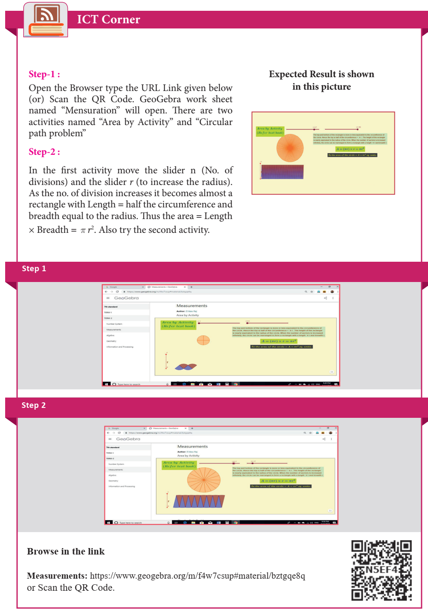